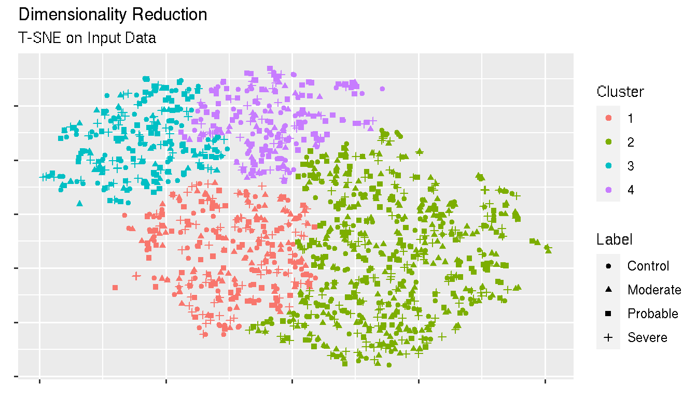
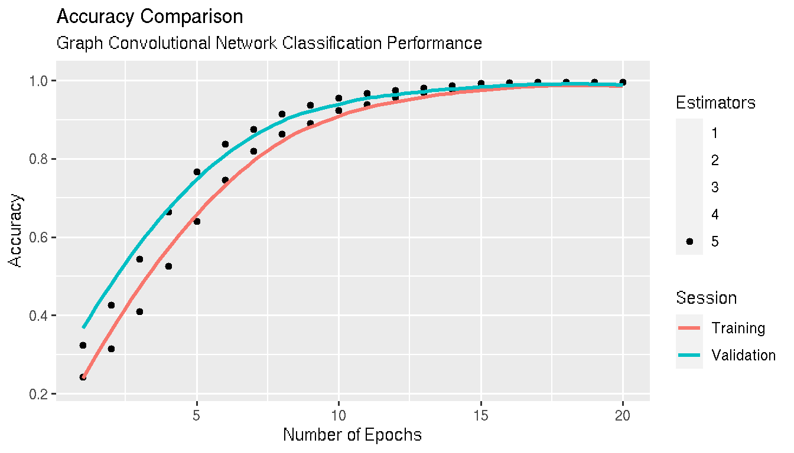
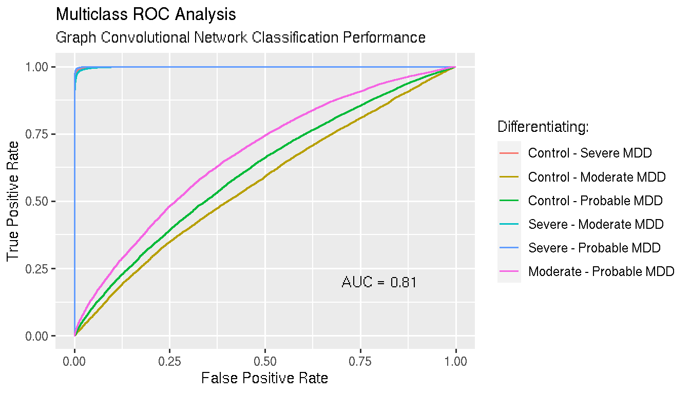

Deep Learning and Connectome
Depression:
Inputs: Adjacency matrix, nodal feature, nodal label
\[H^{(l+1)} = \sigma (\hat{D}^{- \frac{1}{2}} \cdot \hat{A} \cdot \hat{D}^{- \frac{1}{2}} \cdot H^{(l)} \cdot W^{(l)} + b)\]
stellargraph in python3.0tensorflow through keras implementationnetworkx to parse graph objects
## Warning in grid.Call.graphics(C_points, x$x, x$y, x$pch, x$size): semi-
## transparency is not supported on this device: reported only once per page
